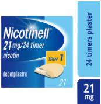
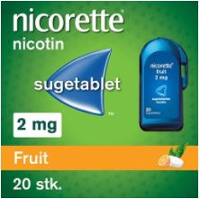
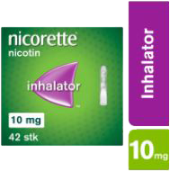
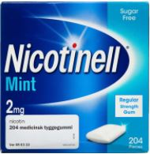
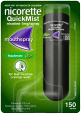
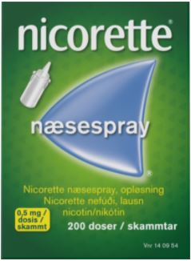
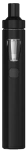

Introduktion
At stoppe med at ryge er ikke nogen nem opgave, men det er blevet lettere. Hvis vi går 50 til 100 år tilbage i tiden, var der ingen produkter, som kunne hjælpe dig med dit rygestop. Heldigvis er der, i løbet af de seneste mange år, blevet opfundet produkter, der kan gøre dit rygestop lettere. Disse produkter kan købes på dit lokale apotek. Følg kun forløbene nedenfor hvis du stoppe fuldstændigt med at ryge, hvilket vil sige at du altså ikke bare kan mindske antallet af cigaretter du ryger. Dette er fordi forløbene er skrevet til personer, som holder helt op med at ryge og du vil måske opleve problemer ved sådan en stor indtagelse af nikotin.
Plastere
Dette produkt er et meget populært valg når folk vælger at stoppe med at ryge. Grunden til dette er den lette anvendelighed. Du skal blot tage plasteret på og så virker produktet. Der er, inde i plasteret, nikotin depoter, som langsomt i løbet af 24 timer afgiver en smule nikotin, der bliver optaget gennem huden. Plastrene fås i tre forskellige styrker, 7 mg nikotin, 14 mg nikotin og 21 mg nikotin.Forløb hvis du ryger mere end 20 cigaretter om dagen
Forløbet med dette produkt er meget simpelt. Du tager et plaster på hver dag efter 24 timer. Du starter med at købe en pakke med 21 mg nikotin, da det mindsker de stærke abstinenser, man får i starten af sit rygestop. Du kører denne rytme med 1 plaster hver dag i 3-4 uger, hvorefter du nedsætter mængden af nikotin i plastrene til 14 mg nikotin. Du kører den samme rytme med disse plastre i endnu 3-4 uger. Til sidst nedsætter du mængden af nikotin i plastrene til 7 mg. Igen gør du dette i 3-4 uger, hvorefter du så stopper med at bruge dem.Forløb hvis du ryger mindre end 20 cigaretter om dagen
Forløbet med dette produkt er meget simpelt. Du tager et plaster på hver dag efter 24 timer. Du starter med at købe en pakke med 14 mg nikotin, da det mindsker de stærke abstinenser, man får i starten af sit rygestop. Du kører denne rytme med 1 plaster hver dag i 3-4 uger, hvorefter du nedsætter mængden af nikotin i plastrene til 7 mg nikotin. Du kører den samme rytme med disse plastre i endnu 3-4 uger. Efter disse 3-4 uger stopper du med at bruge dem.
Sugetabletter
Dette produkt er endnu et letanvendeligt produkt. Du køber en pakke med disse sugetabletter, som du skal tage. Disse sugetabletter fås i 2 forskellige styrker, 1 mg og 2 mg. Sugetabletten må under alle omstændigheder ikke sluges, da dette kan gøre skade. Du skal i stedet sutte på sugetabletten indtil en kraftig smag fornemmes. Du skal derefter lade sugetabletten hvile ude i kinden. Når du ikke kan smage den mere, skal du begynde at sutte på den igen. Disse trin gentages indtil sugetabletten er fuldstændig opløst. Dette tager omkring 30 minutter.Forløb med dette produkt
Du skal generelt tage 1 sugetablet hver 1-2 timer. I løbet af en dag er 8-12 sugetabletter om dagen nok. Hvis du stadigvæk føler stor trang til at ryge kan du tage nogle flere, men du må maksimalt tage 30 sugetabletter med 1 mg nikotin.• Hvis du ryger mere end 30 cigaretter om dagen er det anbefalet at starte med 2 mg sugetabletter.
• Hvis du ryger mere end 20 cigaretter, men mindre end 30 cigaretter, om dagen er det anbefalet at bruge dem du føler der virker bedst.
• Hvis du ryger mindre end 20 cigaretter om dagen er det anbefalet at du bruger 1 mg sugetabletter.

Inhalatorer
Dette produkt er perfekt til at erstatte vanen med at ryge. Dette produkt fungerer som en cigaret af plastik. Dette vil sige at du anvender den som en normal cigaret, ved at putte en nikotin kapsel i denne plastik cigaret og derefter suge på den, ligesom med en normal cigaret. Ved brug af dette produkt til rygestop, anbefales det at bruge minimum 6 nikotin kapsler og højst 12 nikotin kapsler.Forløb med dette produkt
Forløbet med dette produkt er meget enkelt, da det eneste du skal gøre, er at gå ned på antallet af nikotin kapsler du bruger dagligt. Du kan starte med et højt antal nikotin kapsler, hvorefter du gradvist går ned på antallet af nikotin kapsler.
Nikotin Tyggegummi
Dette produkt er meget anvendt til rygestop. De kan købes på dit lokale apotek. Dette tyggegummi fjerner trangen til at ryge, da produktet indeholder nikotin. Nikotinen bliver optaget gennem slimhinderne i munden. Dette tyggegummi kan fås i to styrker, 2 mg og 4 mg.Forløb med dette produkt
Med dette produkt skal du tage et stykke tyggegummi hver gang du føler en stor trang til at ryge en cigaret. Når du bruger dette produkt er det meget vigtigt ikke at tage mere end 24 stykker på en dag. Du skal starte med at bruge tyggegummien med 4 mg nikotin, og derefter langsomt gå ned i styrke og mængde.
Mundhulespray
Ved brug af mundhulesprayen fjerner du rygetrangen og de abstinenser der kommer med et rygestop. Dette er, fordi der i denne spray er nikotin. Du skal med dette produkt spraye væsken ind i munden med sprayen. Du må maksimalt bruge to spray fra sprayen ad gangen og ikke mere end 4 sprays i timen. Du må maksimalt kun bruge 64 sprays på 16 timer.Forløb med dette produkt
I starten skal du tage 1 eller 2 spray fra sprayen når du føler rygetrang. Start med et enkelt spray og hvis rygetrangen ikke forsvinder inden for kort tid kan du tage endnu et spray. Efter godt 1,5 til 2 måneder er gået kan du begynde langsomt at nedsætte mængden af sprays du bruger på en dag. Målet er, efter 3 måneder, at komme under halvdelen af de sprays, som du startede med.
Næsespray
Dette produkt er en næsespray med nikotin. I mod- sætning til normale næsesprays kan dette produkt bruges mange gange på en dag. Der må tages op til 40 pust i hvert næsebor på 24 timer. Det er vigtigt at holde mæng- den af pust i hvert næsebor under 3 i timen, da mere kan fører til overdosis af nikotin, hvilket kan føre til lægehjælp.Forløb med dette produkt
Når du har købt dette produkt på dit lokale apotek, skal du starte med at tage et pust i hvert næsebor hver gang du får en trang til at ryge. Dog skal du holde antallet af pust i hvert næsebor under 3. Som en voksen der lige er begyndt på et rygestop er det meget vigtigt at tage til- strækkelige pust i hvert næsebor, for at være sikker på at du ikke begynder at ryge igen.